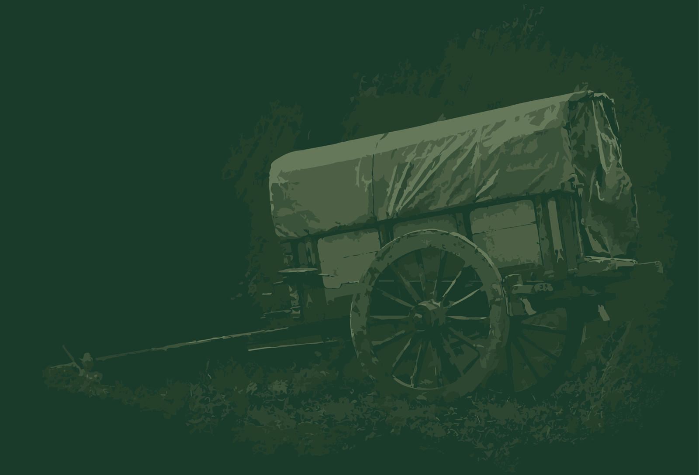
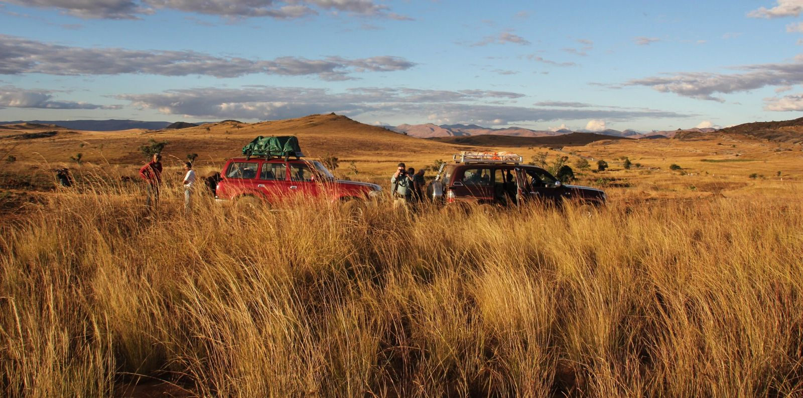
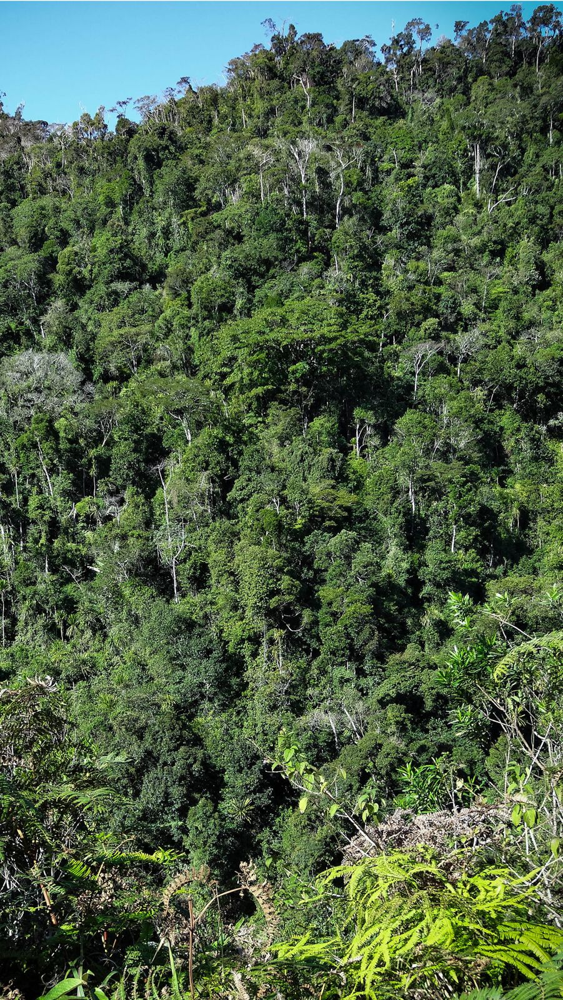
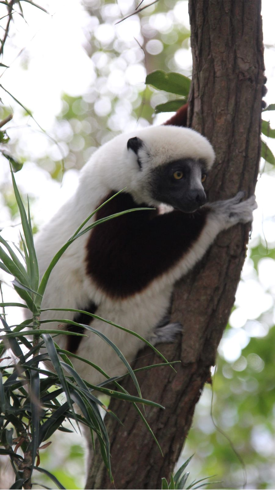
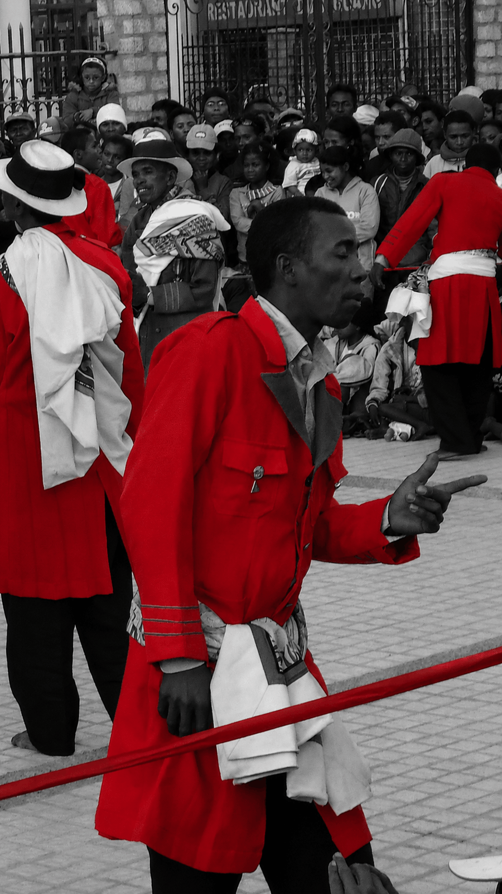
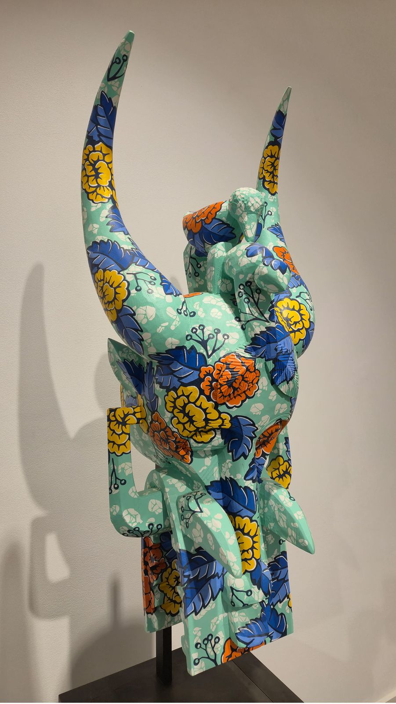

The Great Island
Discover Madagascar
An island so remote it became its own world. Here is where to begin.


Discover Madagascar , an island unlike anywhere else on Earth. Madagascar broke away from Africa around 160 million years ago and quite never looked back. Cut off from the rest of the world long enough for life to take its own course, the island today shelters plants, animals, and people found nowhere else. That isolation is the whole story. Everything that makes Madagascar worth understanding begins there.
Where to begin

Protected Areas
National Parks
122 protected areas. 10% of the country's land.
Madagascar’s protected areas were built on the simple principle that certain places must be left untouched.
Stretching from the coastal wetlands to the highland massifs, they preserve one of the planet’s most endangered ecosystems.
They are not easy to reach, but that’s exactly what makes them worth it.
Biodiversity

Flora & Fauna
9 in 10 species here exist nowhere else on earth.
You are probably familiar with the lemurs, baobabs and fossas. This biodiversity is what happens when evolution gets millions of years to do its thing, undisturbed, on an isolated island. To see them is to see what the world looked like before it was shared.
Culture

People & Traditions
Malagasy Culture
Two ancestries, one island, an entirely distinct world.
The Malagasy trace their ancestry to two entirely different parts of the world, namely Austronesian settlers who crossed the Indian Ocean and Bantu communities who came from the African mainland.
The result surprises most visitors: the rituals, the fady, the way the dead remain present among the living.
Crafts & Culture
Art Malagasy
Into the savoir faire of the malagasy people
